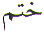
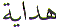
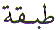
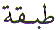

The Arabic letter Kha () is the 7th Letter in the Arabic character set. Kha () in Arabic numerology, Abjad, has the value of 600. This article is about the spiritual meaning of the Letter Kha ().
As far as most of us are concerned, it all started when :
Most of us Muslims think,
that the above Verse only applies to Adam ( ).
That is true. But what most of us do not realise is that the Message
of the Quran is TIMELESS. That means, there are Verses in
the Quran which can be applied to yesterday, today and tomorrow.
Therefore the above Verse can be applied to all Muslim believers.
We are all Allah's Khalifahs. But most of us do not fulfil that
obligation. We are all Allah's representatives. We have to behave
with dignity, and kindness towards everyone, regardless of who
we deal with. We have to be shining examples to the rest of humanity
following in the footsteps of Rasool Allah
).
That is true. But what most of us do not realise is that the Message
of the Quran is TIMELESS. That means, there are Verses in
the Quran which can be applied to yesterday, today and tomorrow.
Therefore the above Verse can be applied to all Muslim believers.
We are all Allah's Khalifahs. But most of us do not fulfil that
obligation. We are all Allah's representatives. We have to behave
with dignity, and kindness towards everyone, regardless of who
we deal with. We have to be shining examples to the rest of humanity
following in the footsteps of Rasool Allah .
Why do we need to follow in the footsteps of Rasool Allah
.
Why do we need to follow in the footsteps of Rasool Allah ? Apart from his numerous excellent qualities
including the Perfect Human - Insan
ul Kamil, he is the
Last Messenger of Allah, the Last and Final 'example' sent by
Allah for us to follow. There is no other person worthy of emulation
after Muhammad
? Apart from his numerous excellent qualities
including the Perfect Human - Insan
ul Kamil, he is the
Last Messenger of Allah, the Last and Final 'example' sent by
Allah for us to follow. There is no other person worthy of emulation
after Muhammad  .
.
And everyone of us will fall short of that example, one way or another.
How is Muhammad the Last and Final Messenger of Allah ?
the Last and Final Messenger of Allah ?
Allah tells us in the Quran:
In the above example
we find the word Khatam - Seal used to describe the role
of Muhammad as the Messenger
of Allah. That means there are no more Messengers after Muhammad
as the Messenger
of Allah. That means there are no more Messengers after Muhammad . Not only that, but this is made absolutely
clear, Allah tells us that Muhammad
. Not only that, but this is made absolutely
clear, Allah tells us that Muhammad
 is not the father of any man among
you. That means
there is no male heir through whom the descendancy of the Messengers
of Allah (
is not the father of any man among
you. That means
there is no male heir through whom the descendancy of the Messengers
of Allah ( ) can continue.
) can continue.
If we care to observe
the Verse number it is 40 and what is 40 ? 40 is Meem ( ).
What is a Khatam - Seal ? The word Khatam also ends with the Letter Meem (
).
What is a Khatam - Seal ? The word Khatam also ends with the Letter Meem ( ).
A good example of a seal is a circle Dairah. What is inside the circle is enclosed. It cannot
get outside the circle. What is outside the circle, is barred,
it cannot get into the circle. The analogy of Muhammad
).
A good example of a seal is a circle Dairah. What is inside the circle is enclosed. It cannot
get outside the circle. What is outside the circle, is barred,
it cannot get into the circle. The analogy of Muhammad is that of the boundary. He
is that of the boundary. He  has covered all the previous Messengers
(
has covered all the previous Messengers
( ) of Allah who came before him.
And he
) of Allah who came before him.
And he  has excluded any other after him
to claim the role of Messenger. Muhammad
has excluded any other after him
to claim the role of Messenger. Muhammad  is Khatam an Nabiyyeen - Seal
of the Prophets.
is Khatam an Nabiyyeen - Seal
of the Prophets.
Anyone claiming to be
a Messenger of Allah after Muhammad ,
is not a Muslim. Anyone who follows these people who have claimed
or will claim to be Messengers of Allah after Muhammad
,
is not a Muslim. Anyone who follows these people who have claimed
or will claim to be Messengers of Allah after Muhammad ,
will not be counted as Muslims, even though they claim to accept
the Quran. In reality, they accept some, or most parts of the
Quran and reject another part.
,
will not be counted as Muslims, even though they claim to accept
the Quran. In reality, they accept some, or most parts of the
Quran and reject another part.
A Muslim has to accept the entire Quran. The Quran is like our own human body. We have to accept all of it. And the above Verse is valid to the Judgement Day.
And what exactly is a disbeliever ?
A disbeliever is one on whom:
The word KhatamSeal = 1040 = 40 ( ) + 400 ()
+ 600 ()
) + 400 ()
+ 600 ()
If we reduce the above total 1040 to a single digit we get 1 + 0 + 4 + 0 = 5 (). A disbeliever lacks Hidayat Guidance. If we look at the above verse, it is verse number is 7. Seven openings in the head which the disbelievers are not using. So Allah sets a Khatam - Seal. How ? By sealing the heart, and veiling the hearing (ears) and eyes = 5.
And Hadrat Sultan Bahu,
Sultan al Arafeen ( ) shows us another
way of looking at this. In his Majmuaa Kalaam
he says There are
14 Tabaq - Layers inside the heart. If we remove the two zeroes in the
number 1040 for Khatam
Seal
we arrive at 14. In the above verse, Allah has sealed the heart
of a disbeliever, AND He has veiled the hearing and the eyes.
Another way of thinking about the KhatamSeal is its likeness to a Tabaqat Layer. These Layers
or the Seal does not allow the Guidance to enter unless Allah
wills. How does Allah Guide ? Allah sends an angel or a human
to guide the one He wants to be guided.
) shows us another
way of looking at this. In his Majmuaa Kalaam
he says There are
14 Tabaq - Layers inside the heart. If we remove the two zeroes in the
number 1040 for Khatam
Seal
we arrive at 14. In the above verse, Allah has sealed the heart
of a disbeliever, AND He has veiled the hearing and the eyes.
Another way of thinking about the KhatamSeal is its likeness to a Tabaqat Layer. These Layers
or the Seal does not allow the Guidance to enter unless Allah
wills. How does Allah Guide ? Allah sends an angel or a human
to guide the one He wants to be guided.
In the case Muhammad
 , Allah sent Jibreel (
, Allah sent Jibreel ( ),
one of the four main angels. In the case Musa (
),
one of the four main angels. In the case Musa ( ),
Allah sent Khidr (
),
Allah sent Khidr ( ), a human being.
How did Musa (
), a human being.
How did Musa ( ) go in search for
Khidr (
) go in search for
Khidr ( )
)
What is Musa ( )
looking for ? He is looking for knowledge. Knowledge which is
sent in the form of Khidr (
)
looking for ? He is looking for knowledge. Knowledge which is
sent in the form of Khidr ( ). The above verse number is 60.
And the word Khidr starts
with the Letter Kha () which has a numerical
value of 600.
). The above verse number is 60.
And the word Khidr starts
with the Letter Kha () which has a numerical
value of 600.
Which is 60
(for the above Verse number) x
10 ( = for Knowledge, which is what Musa (
for Knowledge, which is what Musa ( )
is in search of ) =
600. Musa (
)
is in search of ) =
600. Musa ( )
followed Khidr (
)
followed Khidr ( ) in his search
for Knowledge. Khidr (
) in his search
for Knowledge. Khidr ( ) warned
Musa (
) warned
Musa ( ):
):
We find in the Quran two further incidents, and both times Musa
( ) questioned the actions of Khidr
(
) questioned the actions of Khidr
( ). Khidr (
). Khidr ( )
explained his actions and parted from Musa (
)
explained his actions and parted from Musa ( ).
The final explanation and mention of Musa (
).
The final explanation and mention of Musa ( )
and Khidr (
)
and Khidr ( ) is Verse 82 in
Chapter 18. The entire mention of Musa (
) is Verse 82 in
Chapter 18. The entire mention of Musa ( )
and Khidr (
)
and Khidr ( ) starts at Verse
60 and concludes at Verse 82.
) starts at Verse
60 and concludes at Verse 82.
Now if we look at the word Khidr , it has these exact same numbers, ignoring the zeroes:
= 600
= 800
 = 200
= 200
There are people, who
say that nobody needs a teacher. The Quran and Hadees are enough.
Allah clearly shows us in the Quran, everyone needs a teacher.
Even Musa ( ) who conversed
with Allah directly, needed a teacher, then who are we ? Nothing!
We all need a teacher if we are to attain nearness to Allah.
) who conversed
with Allah directly, needed a teacher, then who are we ? Nothing!
We all need a teacher if we are to attain nearness to Allah.
Apart from the three
lessons learned by Musa ( ) from
Khidr (
) from
Khidr ( ), there is one lesson which no
one can teach other than Allah. Even Khidr (
), there is one lesson which no
one can teach other than Allah. Even Khidr ( )
could not teach that lesson to Musa (
)
could not teach that lesson to Musa ( ).
That is why he parted from Musa (
).
That is why he parted from Musa ( ).
That lesson is PATIENCE. If we are to be Allah's Khalifah,
we need patience to deal fairly with everyone. That is where this
article started.
).
That lesson is PATIENCE. If we are to be Allah's Khalifah,
we need patience to deal fairly with everyone. That is where this
article started.
May Allah have Mercy on us all and make us patient in all conditions. Ameen.
| BACK |